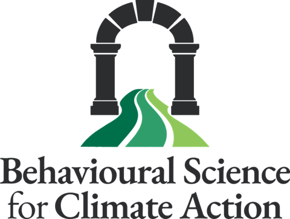

Dr Anandita C. Sabherwal
Behavioural Scientist
Postdoctoral Research Scholar, Princeton University and Boston College
Behavioural Scientist
Postdoctoral Research Scholar, Princeton University and Boston College

At their core, the defining challenges of our times such as climate change are complex coordination problems requiring individuals, businesses, communities and governments to act together at unprecedented speed and scale. My research examines how these forces interact in a psychological–social–institutional nexus and how they can be leveraged to drive climate action. Taking this multi-level approach, I consider the various roles in which individuals can drive sustainable change—as consumers, community members, employees, organisational leaders and citizens.
Leveraging these insights, I develop and test scalable, multi-level behavioural intervention ensembles that harness psychological, social and institutional influences to accelerate climate action and broader sustainability transitions. I utilise a diverse toolkit of methods including large-scale (megastudy) behavioural experiments, conjoint experiments, psychometric scale development and validation, longitudinal analyses, surveys, field studies and computational text analyses.
I obtained a PhD in Psychological and Behavioural Science from the London School of Economics and Political Science, UK, supported by a Grantham Research Institute PhD Scholarship. Previously, I completed an MPhil at the University of Cambridge (UK) and a BA (hons) at Yale-NUS College, where I was supported by the Cambridge Trust Scholarship and the Yale-NUS Faculty Scholarship respectively. Currently, I am a postdoctoral researcher at Princeton University, where I also lead the Princeton Winter School in Behavioral Science for Climate Action.
I aim for my work to catalyse real-world change, especially by informing businesses, public institutions, policymakers and advocacy groups.
My overarching aim is to develop a behavioural science for complex societal challenges. I view challenges such as climate change both as targets for intervention and as contexts for uncovering the mechanisms through which individuals, groups and institutions influence one another. I then leverage these insights to design scalable behavioural interventions that mobilise collective action.
As such, my research is rooted in, and seeks to advance, theories of social and organisational influence and principles of behavioural intervention design. Specifically, I ask: How do psychological, social and institutional processes co-influence one another? How can synergies be created between these processes to drive transformative change? And, equally importantly, what happens when these forces are misaligned on an issue? I translate these insights into interventions to drive key behaviours, including sustainable consumption, workplace sustainability, climate advocacy and policy support. I then stress-test these interventions in multi-intervention megastudies.
I have published this work in leading academic journals including Proceedings of the National Academy of Sciences, Nature's Communications Earth & Environment, Current Opinion in Behavioral Sciences and the Journal of Environmental Psychology, among others.
I have also communicated these findings to broader audiences through public-facing writing for outlets such as TIME, Nature, SPSP's Character and Context blog, The Conversation, Grist and Down to Earth.
My research spans diverse lab and field settings in India, Singapore, the United States, the United Kingdom and the European Union.